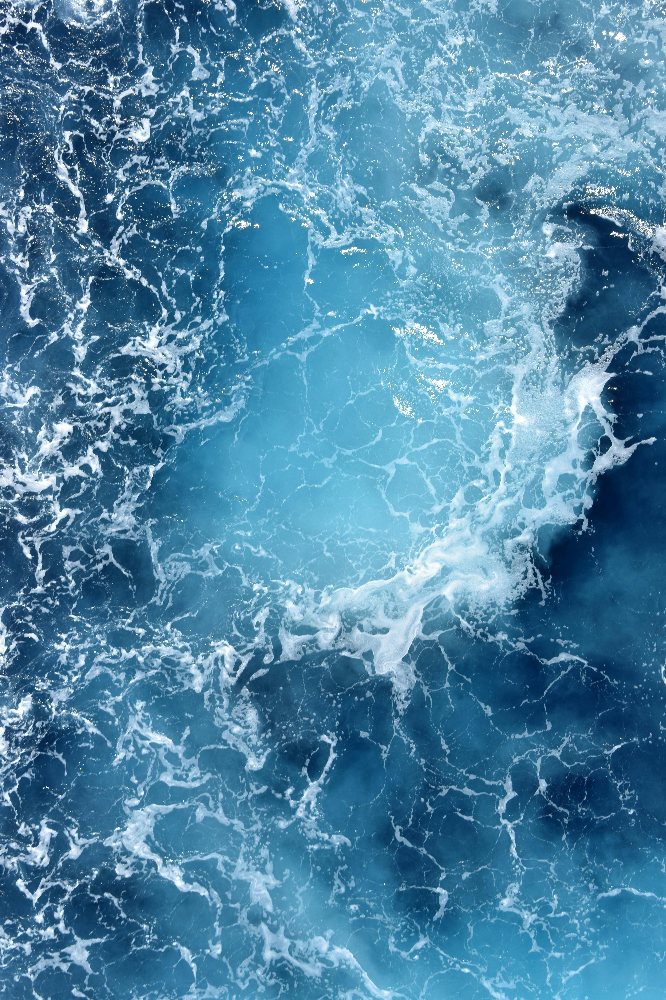
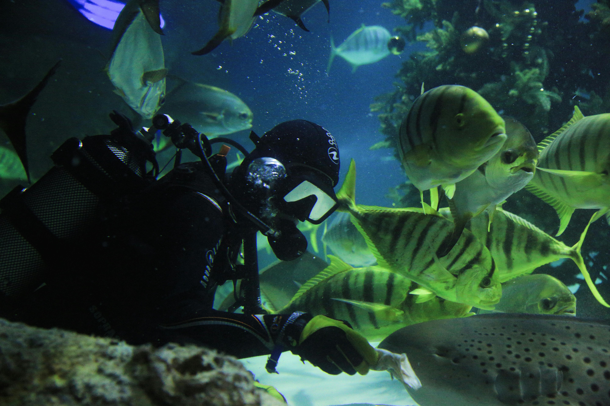
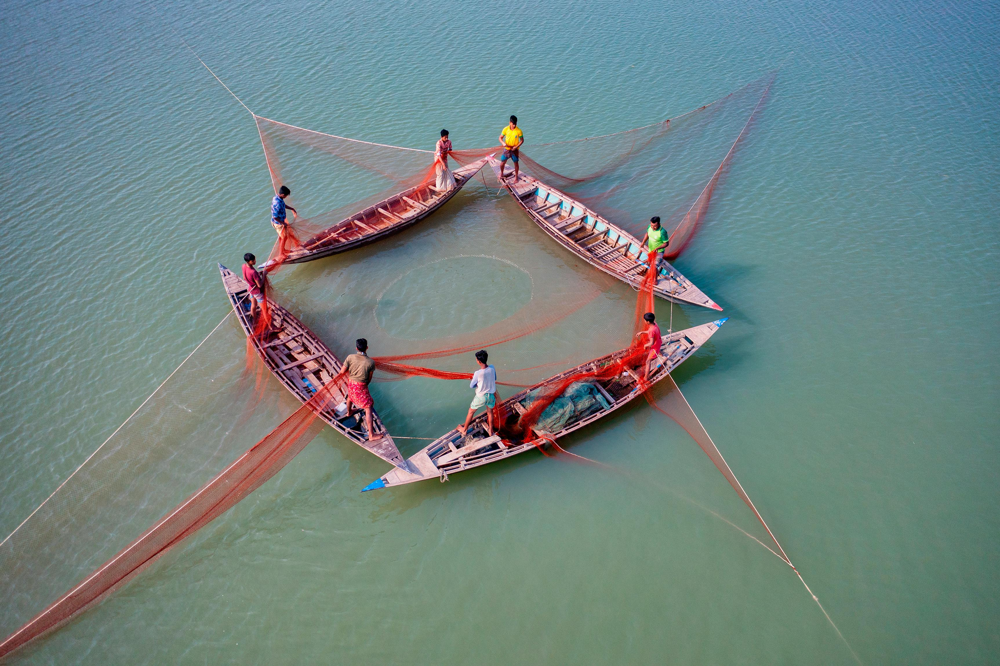
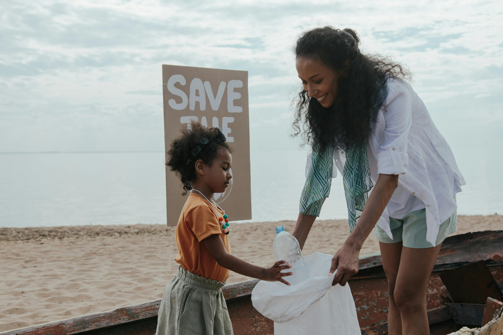

A Poluição no Oceano: Uma Ameaça Global ao Meio Ambiente
A poluição dos oceanos é uma das maiores crises ambientais que o mundo enfrenta atualmente. De plásticos descartados incorretamente a produtos químicos tóxicos, os mares e oceanos estão sendo contaminados em um ritmo alarmante, comprometendo a saúde de ecossistemas marinhos e afetando milhões de pessoas ao redor do globo. Estima-se que cerca de 8 milhões de toneladas de plástico entram nos oceanos a cada ano, causando danos irreversíveis à vida marinha e à qualidade da água.
 Foto por Aaron Ulsh.Principais Fontes de Poluição Oceânica
Plásticos: Os resíduos plásticos representam a maior parte da poluição marinha. Itens descartáveis, como garrafas, sacolas e redes de pesca, acabam nos oceanos, se fragmentando em microplásticos que são ingeridos por animais marinhos, como peixes e tartarugas. Isso prejudica suas funções biológicas e, eventualmente, afeta a saúde humana, pois muitos desses animais fazem parte da cadeia alimentar.
Produtos Químicos e Esgoto: Produtos químicos como pesticidas, fertilizantes e resíduos industriais, junto com o esgoto não tratado, também são despejados no oceano. Esses poluentes provocam a eutrofização, um processo que leva à proliferação de algas tóxicas, causando zonas mortas, áreas com baixo oxigênio, onde a vida marinha não pode sobreviver.
Derramamentos de Óleo: Os acidentes com petroleiros e plataformas de petróleo liberam grandes quantidades de óleo no mar, cobrindo a superfície da água e sufocando organismos marinhos. Esses derramamentos podem causar impactos devastadores e de longo prazo nos ecossistemas costeiros e marinhos.
Impactos da Poluição nos Ecossistemas Marinhos
 Foto por Sofiya Walrus.A poluição nos oceanos ameaça diretamente a biodiversidade marinha. Muitos animais ficam presos em resíduos plásticos ou confundem plásticos com alimento, o que pode ser fatal. Além disso, a contaminação química afeta a saúde dos organismos marinhos, provocando doenças e alterações hormonais. Ecossistemas inteiros, como recifes de corais, também estão sendo destruídos pela poluição e pelo aumento da temperatura causado pelas mudanças climáticas.
Consequências para a Humanidade
 Foto por Azim Khan Ronnie.Os oceanos desempenham um papel vital na regulação do clima, fornecimento de oxigênio e como fonte de alimentos para bilhões de pessoas. A poluição oceânica não só ameaça esses serviços essenciais, mas também impacta negativamente as economias locais que dependem do turismo e da pesca. Consumir frutos do mar contaminados por microplásticos e produtos químicos representa um risco significativo à saúde humana.
O Que Podemos Fazer?
 Foto por Ron Lach.Combater a poluição no oceano exige uma ação global e conjunta. Medidas como a redução do uso de plásticos descartáveis, o tratamento adequado de esgoto e resíduos industriais, a criação de políticas rigorosas de controle da poluição e a promoção de programas de educação ambiental são essenciais para mitigar esse problema.
Conservar os oceanos é fundamental para garantir um futuro sustentável para o planeta e para as futuras gerações. Cada ação conta na luta contra a poluição marinha